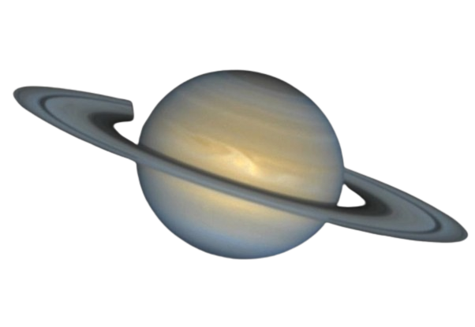

Saturno no es el único planeta que tiene anillos, pero definitivamente tiene los más bellos. Los anillos que vemos están compuestos por grupos de pequeños aros que rodean a Saturno. Están hechos de pedazos de hielo y roca. Como Júpiter, Saturno es una pelota de hidrógeno y helio, en gran parte.
